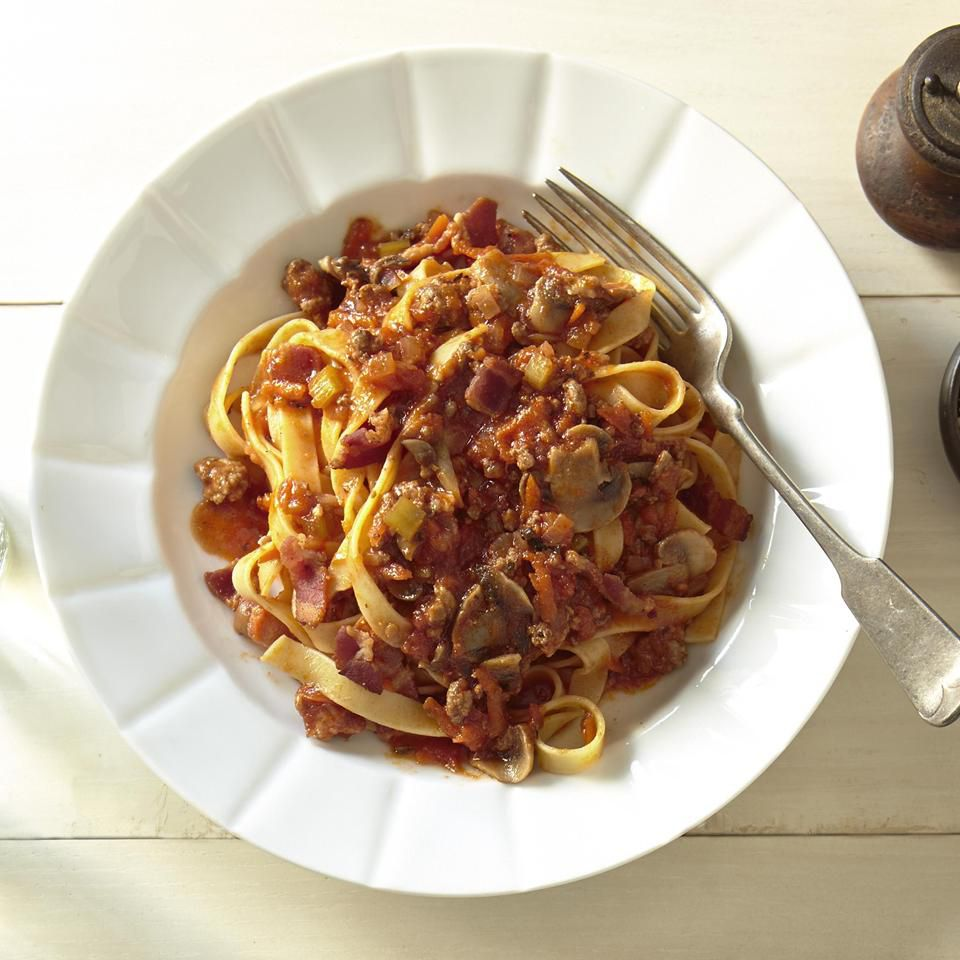

Back to Home
Grandma's Bolognese Sauce

Description
A simple Bolognese recipe for excellent chunky pasta sauce with beef, pork, lots of vegetables, and tons of
flavor.
Ingredients:
- 2 Tablespoons olive oil
- 1 Large onion, minced
- 4 Slices bacon, cut into 1/2 inch pieces
- 1 Clove garlic, minced
- 1 Pound lean ground beef
- ½ Pound ground pork
- 1 (28 ounce) Can Italian plum tomatoes
- ½ Pound fresh mushrooms, sliced
- 6 Ounces tomato sauce
- 2 Carrots, shredded
- 1 Stalk celery, chopped
- ½ Cup dry white wine
- ½ Cup chicken stock
- ½ Teaspoon dried basil
- ½ Teaspoon dried oregano
- Salt and pepper to taste
- 1 Pound pasta
Steps to make Grandma alike Bolognese Sauce:
- Warm oil in a large skillet over medium heat. Sauté onion, bacon, and garlic in hot oil until bacon is
browned and crisp, about 10 minutes. Use a slotted spoon to transfer bacon mixture to a paper towel-lined
plate to drain; set aside.
- Place the same large skillet over medium-high heat. Cook and stir ground beef and pork in the hot skillet
until browned and crumbly, 5 to 7 minutes. Drain and discard grease.
- Stir bacon mixture, tomatoes, mushrooms, tomato sauce, carrots, celery, wine, stock, basil, oregano, salt,
and pepper into meat mixture. Bring to a boil. Cover, reduce heat, and simmer sauce for 1 hour, stirring
occasionally.
- Meanwhile, bring a large pot of lightly salted water to a boil. Add pasta and cook in boiling water until al
dente, 8 to 10 minutes; drain.
- Serve sauce over hot pasta.